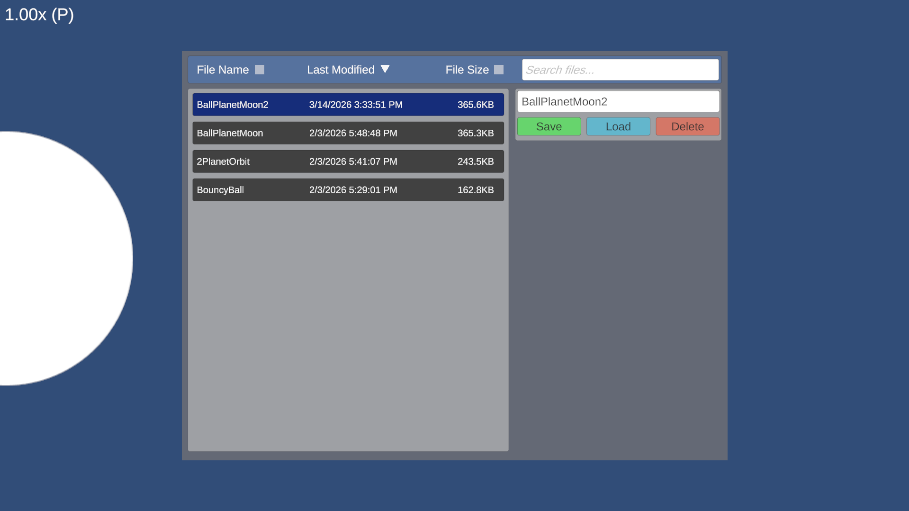

Vector-Two
GitHub RepositoryFun Fact
The saving system includes my most advanced file manager - implementing a full user interface, sorting based on multiple file properties, and even encoding texture data as part of its save files.
Overview
Inspired by the various gravity and collision topics being covered in my IB Physics HL class, Vector-Two came as the third project in a series of experiments with simulating physics. Unlike the preceding projects, Vector-Two was designed with the aim of creating a full-scale physics engine from scratch, only using Unity as a simple means of rendering the environment. As a result, it implements advanced rigidbody collisions using custom collision detection and accounting for both linear and angular motion.


Vector-Two is capable of handling collisions between both spheres and rectangles in any orientation. Collisions are resolved using impulse-based collision resolution. In short, the engine calculates an impulse to apply based on the relative velocities and masses of the colliding objects, and then adjusts their respective velocities appropriately. Additionally, angular impulse is also handled to correctly preserve angular momentum and accurately simulate friction. Gravity is also simulated, with the option to mark certain objects as being sources of gravity, leading to the engine applying Newton's Law of Universal Gravitation as needed. In order to achieve a serviceable level of performance for an experimental simulation, the engine leverages C#'s parallelization in order to process collisions and apply forces more efficiently - although the exact implementation has yet to be thoroughly cleared of potential race conditions. A major focus during Vector-Two's development was on keeping the codebase clean and organized. As such, polymorphism is used to reduce redundant code as much as possible, such as through all collider types inheriting from a single base collider class, and all components relevant to physics objects being subclasses of a single Component class. Vector-Two was also the project during which I learned how to fully utilize vectors to handle directions and other geometry in my code.
Fun Fact
Rather than having a full-scale user interface outside of the file manager, the engine utilizes a wide range of keybindings for most user interaction.